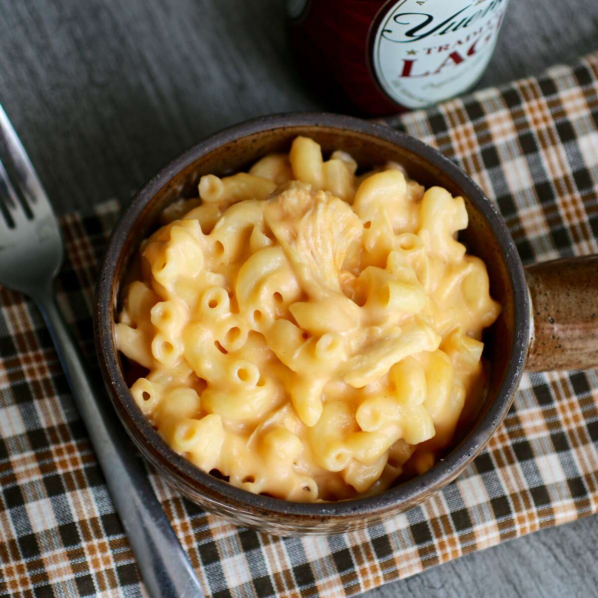

Buffalo Chicken Mac and Cheese

Description
Here is a quote from Wiki's website:
Macaroni and cheese—also called mac 'n' cheese in
the United States, and macaroni cheese in the
United Kingdom[1]—is a dish of cooked macaroni
pasta and a cheese sauce, most commonly cheddar.
It can also incorporate other ingredients, such
as breadcrumbs or meat.[2][3]
Traditional macaroni and cheese is a casserole
baked in the oven; however, it may be prepared
in a sauce pan on top of the stove or using a
packaged mix.[3] The cheese is often first
incorporated into a Béchamel sauce to create a
Mornay sauce, which is then added to the pasta.
In the United States, it is considered a comfort
food.[4][5]
Ingredients
Original recipe yields 8 servings
- 1 (16 ounce) package elbow macaroni
- 1 rotisserie-roasted chicken
- ⅓ cup and ½ tablespoon and ½ teaspoon butter
- ⅓ cup and ½ tablespoon and ½ teaspoon all-purpose flour
- 3 cups milk
- 1 pinch ground black pepper
- 2 cups shredded Cheddar cheese
- 2 cups shredded Monterey Jack cheese
- ½ cup hot sauce (such as Frank's® Redhot®), or more to taste
- ½ cup crumbled gorgonzola cheese
Steps
- Bring a large pot of lightly salted
water to a boil. Cook macaroni in the
boiling water, stirring occasionally
until tender yet firm to the bite,
8 minutes. Drain.
-
Cut wings and legs off rotisserie
chicken. Skin and bone wings and legs;
chop or shred dark meat into bite-size
pieces.
-
Melt butter in a large Dutch oven over
medium heat. Whisk in flour gradually
until a thick paste forms. Cook until
golden, about 1 minute. Pour in milk,
whisking constantly, until thickened and
bubbling, about 5 minutes. Continue to
cook until sauce is smooth, about 1 minute
more. Reduce heat and season sauce with
black pepper.
-
Stir Cheddar and Monterey Jack cheese
into the sauce until melted and combined.
Stir in hot sauce, adjusting to reach
desired level of spiciness. Add blue
cheese, chicken, and macaroni; mix well
to combine.